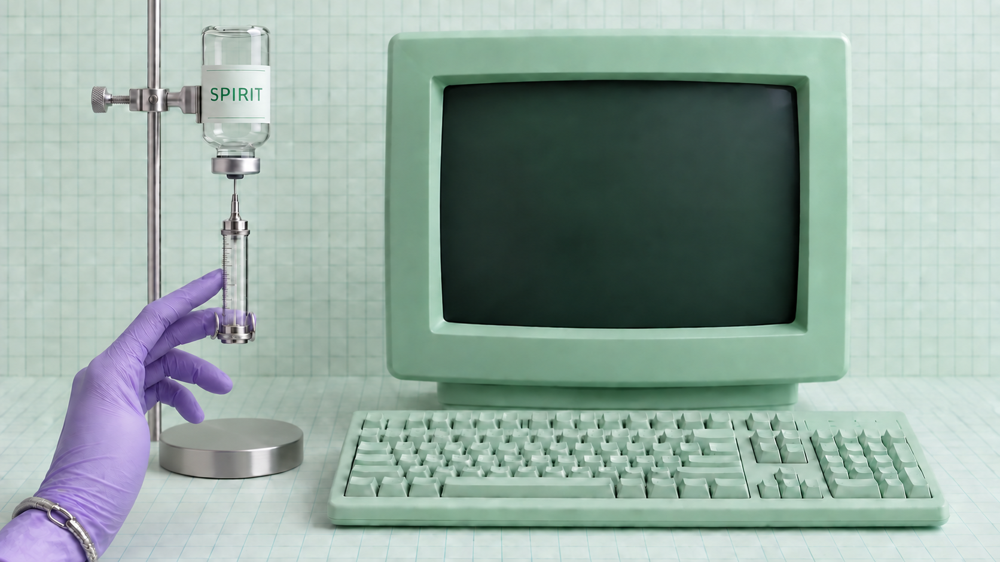

W
e
l
l
C
o
m
e
t
o
S
p
i
r
i
t
N
e
t
w
o
r
k
.
W
a
l
l
C
o
m
e
t
o
R
E
M
N
E
T
w
o
r
k
.
Q
W
E
R
T
Y
U
I
O
P
A
S
D
F
G
H
J
K
L
Z
X
C
V
B
N
M
SPIRIT / CONNECTING · 05
HPへ進む →
もう一度見る
SPIRIT NETWORK · 音のない7秒の表紙。途中でもHPへ進めます。